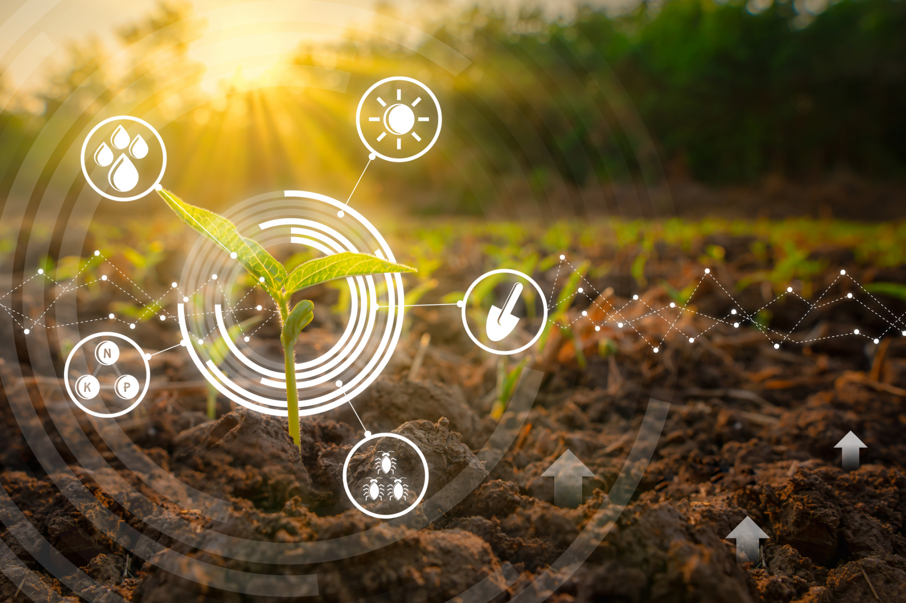

Atticus
Benefícios
Aumento da produtividade: O ThinkFarm otimiza as condições de crescimento das plantas, ajustando a irrigação e a iluminação com base nos dados coletados pelos sensores. Isso resulta em uma colheita mais saudável e de maior qualidade, com um aumento significativo na produtividade agrícola.
Uso eficiente de recursos: Ao fornecer informações precisas sobre a umidade do solo e a luminosidade, o ThinkFarm permite uma irrigação precisa, reduzindo o desperdício de água e minimizando o consumo energético. Isso contribui para a preservação dos recursos naturais e a sustentabilidade ambiental.
Tomada de decisões informadas: Com os dados em tempo real fornecidos pelo ThinkFarm, os agricultores podem tomar decisões embasadas, ajustando as práticas agrícolas conforme as necessidades das plantas. Isso resulta em um manejo mais eficiente e no aproveitamento máximo do potencial das culturas.
Informações em tempo real: Os dados coletados permitem aos agricultores monitorar constantemente as condições do solo e da luz, permitindo uma tomada de decisão ágil e informada.
Identificação precoce de problemas: Os sensores ajudam a detectar problemas como doenças ou deficiências nutricionais de forma precoce, permitindo ações corretivas rápidas e evitando perdas na produção.